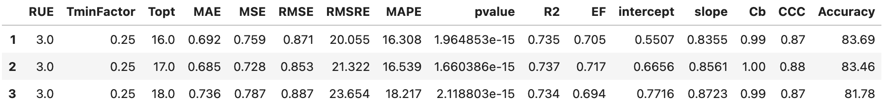
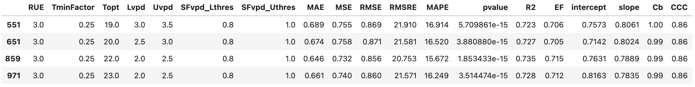
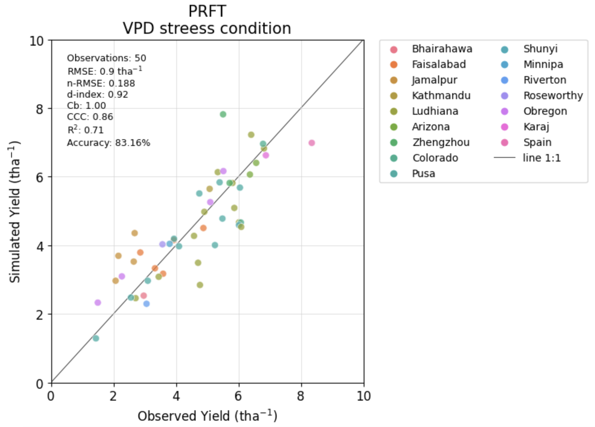
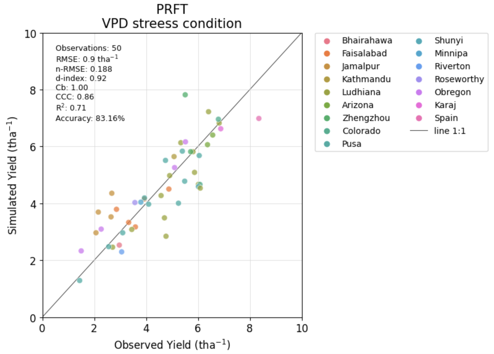

Validating models
Select the best results using filters#
After running several models you can filter results to see which one look better.
Example of filter
The following table is an example of one filter used to evaluate the best models, it only uses three (3) evaluation metrics (Cb, CCC, and RMSRE) to select the top ones.
| Temperature Function | Cb | CCC | RMSRE | |
|---|---|---|---|---|
| PRFT | 0.98 | > 0.8 | ||
| PRFT vpd stress | 0.98 | > 0.8 | < 22 |
When the combinations file is small you can filter directly in your session. For example:
 But when the combinations dataset is huge, you will have memory issues. Then the best way to filter the combinations in an easy way, is using the util.filterSimulations function, as follows:
No stress conditions#
%%time
# path of the combinations and metrics files in parquet format
c_PRFT = os.path.join(config['RESULTS_PATH'], "PRFT", "PRFT_noStress", "combinations_Yield_PRFT_noStress.parquet")
m_PRFT = os.path.join(config['RESULTS_PATH'], "PRFT", "PRFT_noStress", "metrics_Yield_PRFT_noStress.parquet")
# Filters
cmb_filters = dict(
RUE = ('RUE', '=', 3.0 ),
TminFactor = ('TminFactor', '=', 0.25 )
)
met_filters = dict(
Cb = ('>', 0.98),
CCC = ('>', 0.80)
)
outputPath = os.path.join(config['RESULTS_PATH'], "PRFT")
# Use pdFormat=True to display filtered table. Use when the results are small to avoid freeze you computer session
# Use fmt='parquet' and avoid fmt='csv' when the results are quite large.
# Use dispFig=True if the filtered table is small.
filtered_c_PRFT = filterSimulations(functype='PRFT', VPDstress=False, cmb=c_PRFT, met=m_PRFT,
cmb_filters=cmb_filters, met_filters=met_filters, pdFormat=True,
dispFig=True, saveFig=True, figname='Fig_topComb_avgYield', figfmt='pdf',
saveResults=True, outputPath=outputPath, fmt='parquet')
filtered_c_PRFT

VPD stress conditions#
# Path of the combinations and metrics files
c_PRFT_SFvpd = os.path.join(config['RESULTS_PATH'], "PRFT", "PRFT_SFvpd", "combinations_Yield_PRFT_SFvpd.parquet")
m_PRFT_SFvpd = os.path.join(config['RESULTS_PATH'], "PRFT", "PRFT_SFvpd", "metrics_Yield_PRFT_SFvpd.parquet")
cmb_filters = dict(
RUE = ('RUE', '=', 3.0 ),
TminFactor = ('TminFactor', '=', 0.25 )
)
met_filters = dict(
Cb = ('>', 0.98),
CCC = ('>', 0.80)
)
outputPath = os.path.join(config['RESULTS_PATH'], "PRFT")
# Use pdFormat=True to display filtered table. Use when the results are small to avoid freeze you computer session
# Use fmt='parquet' and avoid fmt='csv' when the results are quite large.
# Use dispFig=True if the filtered table is small.
filtered_c_PRFT_SFvpd = filterSimulations(functype='PRFT', VPDstress=True, cmb=c_PRFT_SFvpd, met=m_PRFT_SFvpd,
cmb_filters=cmb_filters, met_filters=met_filters, pdFormat=True,
dispFig=True, saveFig=True, figname='Fig_topComb_avgYield', figfmt='pdf',
saveResults=True, outputPath=outputPath, fmt='parquet')
filtered_c_PRFT_SFvpd
 

Checking selected combinations side-by-side#
Displaying grain yield comparison with and without VPD stress for the best combinations.
figures.plot_corrTempFunct(cmb_noStress=filtered_c_PRFT, cmb_noStress_filtered=filtered_c_PRFT,
cmb_SFvpd=filtered_c_PRFT_SFvpd, cmb_SFvpd_filtered=filtered_c_PRFT_SFvpd,
functype='PRFT',fld1='ObsYield',fld2='SimYield',hue='location', ncol=6, s=40, alpha=0.95, xy_lim=1,
fonts_axes=10, fonts_titles=12, dispScore=True, errorbar=False, saveFig=True, showFig=True,
path_to_save_results=path_to_save_results, dirname='Figures', fname='Fig_2_filtered', fmt='jpg')
figures.plot_corrTempFunct(cmb_noStress=filtered_c_PRFT, cmb_noStress_filtered=filtered_c_PRFT,
cmb_SFvpd=filtered_c_PRFT_SFvpd, cmb_SFvpd_filtered=filtered_c_PRFT_SFvpd,
functype='PRFT',fld1='ObsYield',fld2='SimYield',hue='location', ncol=6, s=80, alpha=0.95, xy_lim=1,
fonts_axes=10, fonts_titles=12, dispScore=True, errorbar=True, saveFig=True, showFig=True,
path_to_save_results=path_to_save_results, dirname='Figures', fname='Fig_2_filtered_errorbar', fmt='jpg')
Conclusion#
Congratulations
You have run a simulation using a prebuilt dataset and the Temperature Functions API.